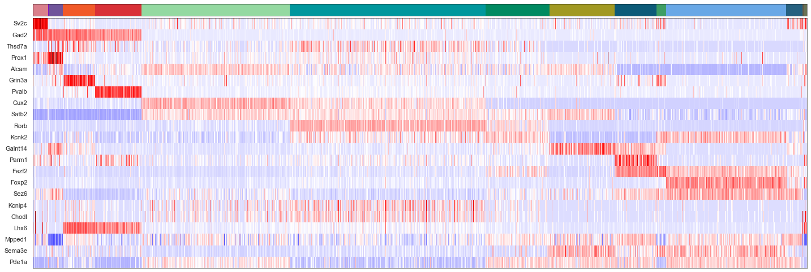
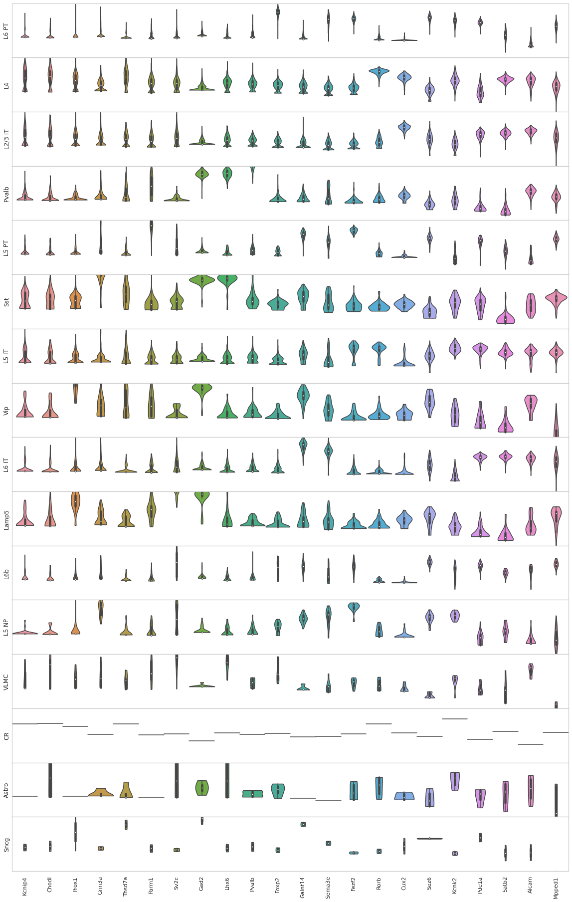
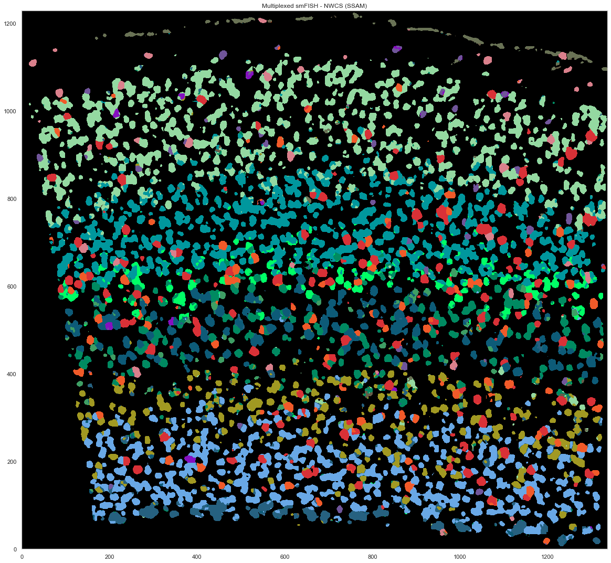
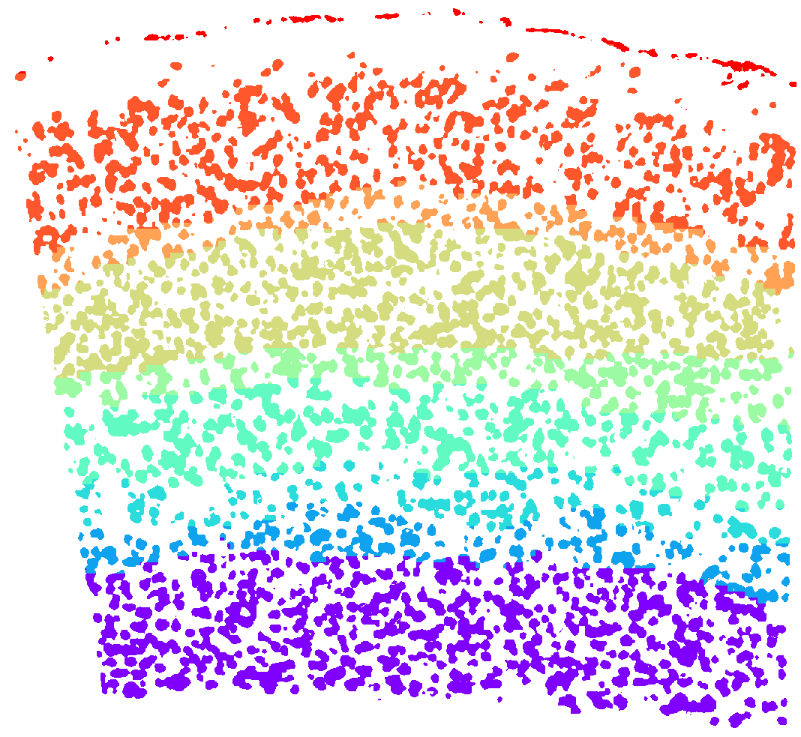
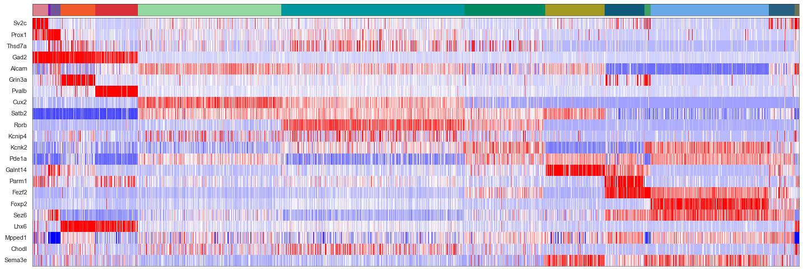
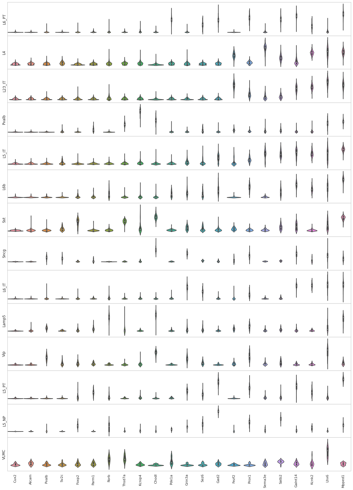
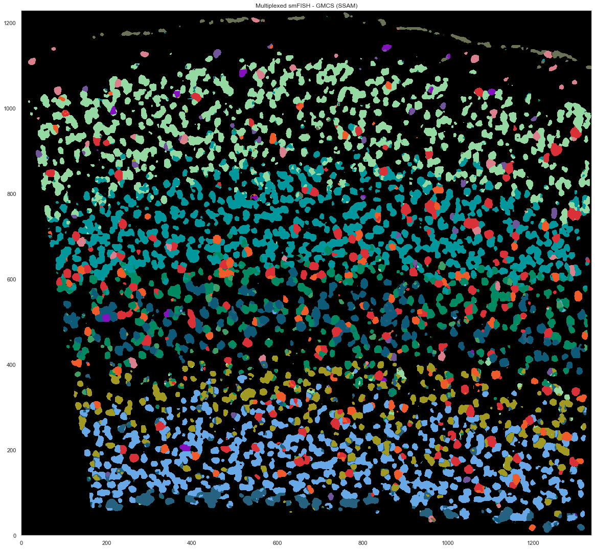
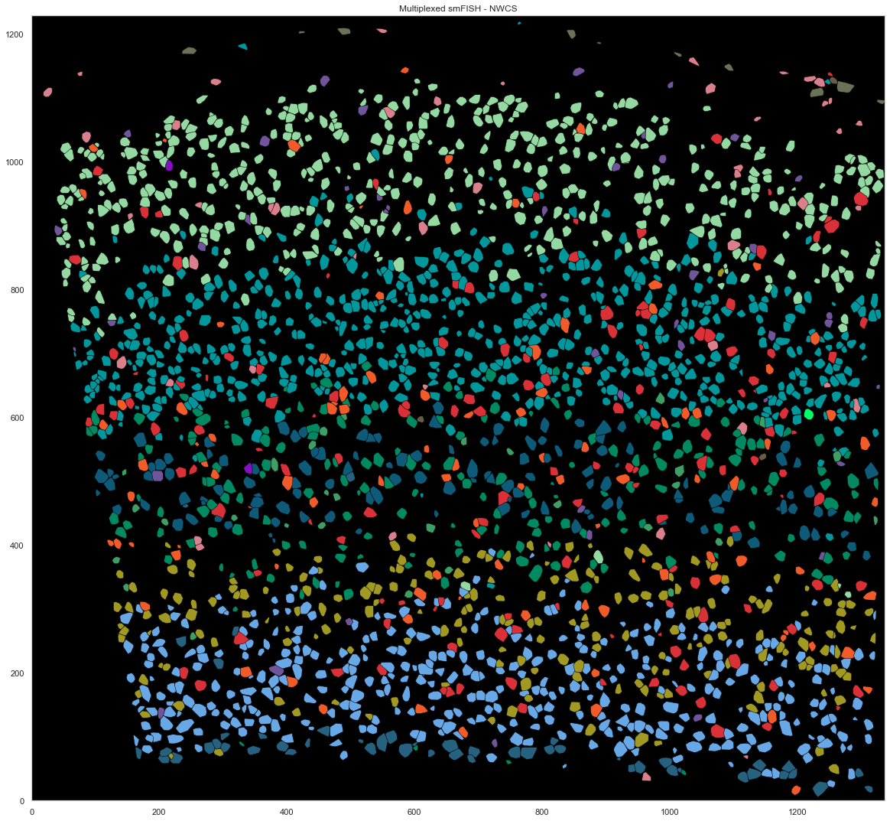
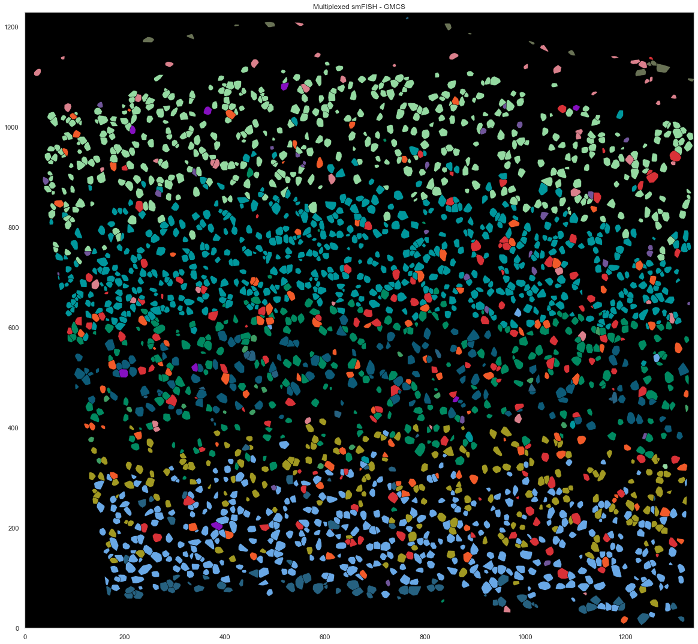

SSAM Notebook: Multiplexed smFISH data SSAM analysis¶
[16]:
import matplotlib.pyplot as plt
import seaborn as sns
from sklearn import preprocessing
import pickle
import numpy as np
import pandas as pd
from shapely.geometry import Point, Polygon
[17]:
plt.rcParams["font.family"] = "Arial"
[18]:
cell_class_colors = {
"Lamp5": "#DA808C",
"Sncg": "#D633FF",
"Serpinf1": "#8510C0",
"Vip": "#B864CC",
"Sst": "#FF9900",
"Pvalb": "#D93137",
"L2/3 IT": "#C4EC04",
"L4": "#00979D",
"L5 IT": "#50B2AD",
"L6 IT": "#A19922",
"L5 PT": "#0D5B78",
"L5 NP": "#3E9E64",
"L6 CT": "#69A8E6",
"L6 PT": "#2D8CB8",
"L6b": "#53377D",
"Meis2": "#FF0000",
"CR": "#00FF66",
"Astro": "#665C47",
"Oligo": "#2E3E39",
"VLMC": "#697255",
"Peri": "#665547",
"SMC": "#807059",
"Endo": "#8D6C62",
"Macrophage": "#537358",
}
[19]:
seg_df = pd.read_csv("data/baysor/allen_smfish/segmentation.csv")
[20]:
import pandas as pd
spots = pd.read_csv("data/raw/smFISH_MCT_CZI_Panel_0_spot_table.csv", usecols=["x", "y", "target"]).rename(columns={"target": "gene"}).set_index('gene')
spots['cell'] = seg_df['cell'].to_numpy()
um_per_pixel = 0.1
spots.x = spots.x*um_per_pixel
spots.y = spots.y*um_per_pixel
spots.x -= spots.x.min()
spots.y -= spots.y.min()
[21]:
import json
with open("spacejam2/data/annotations/Allen_smFISH_annotations_geo.json") as f:
annotations = json.load(f)['geometries'][0]
p = Polygon(annotations["coordinates"][0])
spots['layers'] = ["VISp" if p.intersects(Point(a)) else "outside_VISp" for a in spots[["x","y"]].values]
[22]:
spots = pd.DataFrame(spots[spots['layers'] == 'VISp'])
[23]:
import numpy as np
[24]:
beta = 3.65568224985292
rotm = np.array([[np.cos(beta), np.sin(beta)], [-np.sin(beta), np.cos(beta)]])
pos_um = np.array([spots.x, spots.y])
rot_um = np.dot(pos_um.T, rotm)
rot_um[:, 0] -= np.min(rot_um[:, 0])
rot_um[:, 1] -= np.min(rot_um[:, 1])
[25]:
spots.x = rot_um[:, 0]
spots.y = rot_um[:, 1]
[11]:
spots
[11]:
| x | y | cell | layers | |
|---|---|---|---|---|
| gene | ||||
| Fezf2 | 1315.182205 | 819.217163 | 1605 | VISp |
| Fezf2 | 1320.888600 | 849.389891 | 2496 | VISp |
| Fezf2 | 1312.216275 | 828.169190 | 1605 | VISp |
| Fezf2 | 1326.185386 | 826.385356 | 1041 | VISp |
| Fezf2 | 1311.445646 | 830.360813 | 1605 | VISp |
| ... | ... | ... | ... | ... |
| Parm1 | 138.048814 | 405.155912 | 2822 | VISp |
| Parm1 | 134.461634 | 507.451830 | 407 | VISp |
| Parm1 | 152.472339 | 434.736509 | 4354 | VISp |
| Parm1 | 126.271979 | 403.504210 | 3478 | VISp |
| Parm1 | 138.543595 | 457.197028 | 999 | VISp |
640082 rows × 4 columns
[4]:
import ssam
[5]:
ds = ssam.SSAMDataset("ssam_data/msmfish")
analysis = ssam.SSAMAnalysis(ds, ncores=10, verbose=True)
[62]:
width = int(spots.x.max())
height = int(spots.y.max())
analysis.run_kde(locations=spots, width=width, height=height, bandwidth=2.5)
Running KDE for gene Alcam...
Saving KDE for gene Alcam...
Running KDE for gene Chodl...
Saving KDE for gene Chodl...
Running KDE for gene Cux2...
Saving KDE for gene Cux2...
Running KDE for gene Fezf2...
Saving KDE for gene Fezf2...
Running KDE for gene Foxp2...
Saving KDE for gene Foxp2...
Running KDE for gene Gad2...
Saving KDE for gene Gad2...
Running KDE for gene Galnt14...
Saving KDE for gene Galnt14...
Running KDE for gene Grin3a...
Saving KDE for gene Grin3a...
Running KDE for gene Kcnip4...
Saving KDE for gene Kcnip4...
Running KDE for gene Kcnk2...
Saving KDE for gene Kcnk2...
Running KDE for gene Lhx6...
Saving KDE for gene Lhx6...
Running KDE for gene Mpped1...
Saving KDE for gene Mpped1...
Running KDE for gene Parm1...
Saving KDE for gene Parm1...
Running KDE for gene Pde1a...
Saving KDE for gene Pde1a...
Running KDE for gene Prox1...
Saving KDE for gene Prox1...
Running KDE for gene Pvalb...
Saving KDE for gene Pvalb...
Running KDE for gene Rorb...
Saving KDE for gene Rorb...
Running KDE for gene Satb2...
Saving KDE for gene Satb2...
Running KDE for gene Sema3e...
Saving KDE for gene Sema3e...
Running KDE for gene Sez6...
Saving KDE for gene Sez6...
Running KDE for gene Sv2c...
Saving KDE for gene Sv2c...
Running KDE for gene Thsd7a...
Saving KDE for gene Thsd7a...
[6]:
analysis.load_kde()
[18]:
exp_thres = 0.027
norm_thres = 0.2
[19]:
analysis.find_localmax(search_size=3)
Found 5081 local max vectors.
[20]:
analysis.normalize_vectors()
Loaded a cached normalized vector field (to avoid this behavior, set re_run=True).
[7]:
cell_by_gene = pd.read_csv("data/jeremy_filtered/smFISH_filtered_cellxgene.csv")
cell_by_gene = cell_by_gene.set_index('gene_name').T[ds.genes]
[8]:
cell_by_gene
[8]:
| gene_name | Alcam | Chodl | Cux2 | Fezf2 | Foxp2 | Gad2 | Galnt14 | Grin3a | Kcnip4 | Kcnk2 | ... | Parm1 | Pde1a | Prox1 | Pvalb | Rorb | Satb2 | Sema3e | Sez6 | Sv2c | Thsd7a |
|---|---|---|---|---|---|---|---|---|---|---|---|---|---|---|---|---|---|---|---|---|---|
| 1 | 0 | 0 | 0 | 15 | 20 | 0 | 0 | 1 | 0 | 30 | ... | 0 | 16 | 0 | 1 | 0 | 9 | 4 | 12 | 0 | 0 |
| 5 | 4 | 1 | 20 | 3 | 1 | 3 | 2 | 0 | 1 | 39 | ... | 1 | 10 | 2 | 3 | 52 | 32 | 2 | 6 | 1 | 2 |
| 6 | 36 | 1 | 39 | 1 | 1 | 0 | 1 | 0 | 2 | 3 | ... | 0 | 6 | 1 | 1 | 2 | 24 | 1 | 6 | 1 | 1 |
| 7 | 32 | 1 | 37 | 2 | 1 | 0 | 0 | 1 | 1 | 8 | ... | 2 | 20 | 1 | 2 | 2 | 18 | 2 | 7 | 0 | 1 |
| 9 | 66 | 0 | 19 | 2 | 0 | 75 | 0 | 0 | 0 | 6 | ... | 6 | 1 | 0 | 255 | 7 | 1 | 1 | 3 | 0 | 18 |
| ... | ... | ... | ... | ... | ... | ... | ... | ... | ... | ... | ... | ... | ... | ... | ... | ... | ... | ... | ... | ... | ... |
| 4664 | 19 | 1 | 42 | 2 | 2 | 1 | 0 | 0 | 1 | 3 | ... | 1 | 32 | 1 | 0 | 2 | 13 | 0 | 19 | 0 | 2 |
| 4665 | 0 | 0 | 0 | 15 | 21 | 1 | 0 | 0 | 0 | 32 | ... | 0 | 39 | 0 | 3 | 0 | 11 | 15 | 28 | 0 | 0 |
| 4669 | 57 | 10 | 6 | 9 | 5 | 65 | 23 | 50 | 4 | 18 | ... | 6 | 4 | 4 | 6 | 2 | 4 | 20 | 8 | 7 | 6 |
| 4670 | 7 | 0 | 6 | 0 | 0 | 0 | 0 | 0 | 0 | 15 | ... | 0 | 0 | 0 | 1 | 23 | 20 | 0 | 2 | 0 | 1 |
| 4690 | 0 | 0 | 0 | 2 | 6 | 0 | 0 | 0 | 0 | 12 | ... | 0 | 12 | 0 | 1 | 0 | 3 | 2 | 4 | 0 | 0 |
2360 rows × 22 columns
[57]:
from sklearn.preprocessing import normalize
#cell_by_gene_normalized = ssam.run_sctransform(cell_by_gene.reset_index(drop=True), plot_model_pars=True)[0]
cell_by_gene_normalized = np.log(normalize(cell_by_gene, norm="l1", axis=1) * 10 + 1)
cell_by_gene_normalized_scaled = preprocessing.scale(cell_by_gene_normalized)
#cell_by_gene_normalized_scaled = (cell_by_gene_normalized - np.min(cell_by_gene_normalized, axis=0)) / np.max(cell_by_gene_normalized, axis=0)
[11]:
"""
def sort_genes(tbl, genes):
o1 = np.argsort(-np.argmax(tbl, axis=0))
s1 = tbl[:, o1]
o2 = np.argsort(np.mean(np.cumsum(s1, axis=0), axis=0))
if tbl_sort is not None:
return tbl_sort[:, o1][:, o2], np.array(genes)[o1][o2]
else:
return s1[:, o2], np.array(genes)[o1][o2]
sorted_cbg, sorted_genes = sort_genes(cell_by_gene_normalized, ds.genes, cell_by_gene_normalized_scaled)
"""
[43]:
from collections import defaultdict
from itertools import chain
def sort_genes(centroids, tbl, genes, min_exp=0.5):
sorted_genes = defaultdict(lambda: [])
sorted_cnt = 0
while sorted_cnt < len(genes):
for cidx, mean_cl in enumerate(centroids):
for gidx in np.argsort(mean_cl)[::-1]:
if all([not genes[gidx] in l for l in sorted_genes.values()]):
if mean_cl[gidx] < min_exp:
sorted_genes["rem"].append(genes[gidx])
else:
sorted_genes[cidx].append(genes[gidx])
sorted_cnt += 1
break
sorted_genes = list(chain(*[sorted_genes[i] for i in range(len(centroids))])) + sorted_genes["rem"]
sorted_gidx = [list(genes).index(g) for g in sorted_genes]
return tbl[:, sorted_gidx], sorted_genes
[72]:
def plot_heatmap(sorted_cbg, sorted_genes, calls, uniq_calls, cols, figsize, vmin=None, vmax=None):
from sklearn import preprocessing
from mpl_toolkits.axes_grid1 import Divider, Size
from matplotlib import patches
rects = []
sorted_cbg2 = np.zeros_like(sorted_cbg)
curpos = 0
for idx, (cell_type, col) in enumerate(zip(uniq_calls, cols)):
cl_vecs = sorted_cbg[calls.subclass == cell_type]
sorted_cbg2[curpos:curpos+len(cl_vecs)] = cl_vecs
rects.append(patches.Rectangle((curpos, 0), curpos+len(cl_vecs), 1, linewidth=0, facecolor=col))
curpos += len(cl_vecs)
fig = plt.figure(figsize=figsize)
#fig, axes = plt.subplots(2, 1, figsize=[20, 10], sharex=True)
h = [Size.Fixed(1.0), Size.Scaled(1.0)]
v = [Size.Fixed(0), Size.Scaled(1.0), Size.Fixed(0.05), Size.Fixed(0.3)]
divider = Divider(fig, (0, 0, 1, 1), h, v, aspect=False)
ax_heatmap = fig.add_axes(divider.get_position(), axes_locator=divider.new_locator(nx=1, ny=1))
ax_ctbar = fig.add_axes(divider.get_position(), axes_locator=divider.new_locator(nx=1, ny=3), sharex=ax_heatmap)
for rect in rects:
ax_ctbar.add_patch(rect)
ax_ctbar.axes.xaxis.set_visible(False)
ax_ctbar.axes.yaxis.set_visible(False)
for sp in ax_ctbar.spines.values():
sp.set_linewidth(0.5)
sp.set_color('k')
sns.heatmap(sorted_cbg2.T[::-1, :], vmin=vmin, vmax=vmax, cmap='seismic', yticklabels=sorted_genes[::-1],
cbar=None, ax=ax_heatmap)
ax_heatmap.axes.xaxis.set_visible(False)
for tick in ax_heatmap.get_yticklabels():
tick.set_fontname("Arial")
for sp in ax_heatmap.spines.values():
sp.set_linewidth(0.5)
sp.set_color('k')
sp.set_visible(True)
plt.yticks(rotation=0)
#ax_hist = fig.add_axes([1.02, 0.74, 0.08, 0.1])
#ax_hist.hist(np.ravel(sorted_cbg2), bins=100, histtype='step', lw=3, color='lime')
#ax_hist.set_xlim([-2.5, 2.5])
#ax_hist.axes.xaxis.set_ticks([-2.5, 0, 2.5])
#ax_hist.axes.yaxis.set_visible(False)
return fig
[60]:
calls_nwcs = pd.read_csv("consensus_calls/renee/smFISH_filtered_combined_mapping_neg_weight_subclass.csv")
[61]:
#uniq_celltypes_nwcs = list(calls_nwcs.subclass.unique())
uniq_celltypes_nwcs = [cl for cl in cell_class_colors.keys() if cl in calls_nwcs.subclass.unique()]
centroids_nwcs = []
for cell_type in uniq_celltypes_nwcs:
centroids_nwcs.append(np.mean(cell_by_gene_normalized[calls_nwcs.subclass == cell_type], axis=0))
[62]:
centroids_scaled_nwcs = []
for cell_type in uniq_celltypes_nwcs:
centroids_scaled_nwcs.append(np.mean(cell_by_gene_normalized_scaled[calls_nwcs.subclass == cell_type], axis=0))
sorted_cbg, sorted_genes = sort_genes(centroids_scaled_nwcs, cell_by_gene_normalized_scaled, ds.genes)
[76]:
cols = [cell_class_colors[ct] for ct in uniq_celltypes_nwcs]
plot_heatmap(sorted_cbg[:, ::-1], sorted_genes[::-1], calls_nwcs, uniq_celltypes_nwcs, cols, [20, 6.5], vmin=-10, vmax=10).savefig("msmfish_heatmap_nwcs.pdf")
---------------------------------------------------------------------------
PermissionError Traceback (most recent call last)
Input In [76], in <module>
1 cols = [cell_class_colors[ct] for ct in uniq_celltypes_nwcs]
----> 2 plot_heatmap(sorted_cbg[:, ::-1], sorted_genes[::-1], calls_nwcs, uniq_celltypes_nwcs, cols, [20, 6.5], vmin=-10, vmax=10).savefig("msmfish_heatmap_nwcs.pdf")
File ~/micromamba/envs/ssam/lib/python3.9/site-packages/matplotlib/figure.py:3019, in Figure.savefig(self, fname, transparent, **kwargs)
3015 for ax in self.axes:
3016 stack.enter_context(
3017 ax.patch._cm_set(facecolor='none', edgecolor='none'))
-> 3019 self.canvas.print_figure(fname, **kwargs)
File ~/micromamba/envs/ssam/lib/python3.9/site-packages/matplotlib/backend_bases.py:2319, in FigureCanvasBase.print_figure(self, filename, dpi, facecolor, edgecolor, orientation, format, bbox_inches, pad_inches, bbox_extra_artists, backend, **kwargs)
2315 try:
2316 # _get_renderer may change the figure dpi (as vector formats
2317 # force the figure dpi to 72), so we need to set it again here.
2318 with cbook._setattr_cm(self.figure, dpi=dpi):
-> 2319 result = print_method(
2320 filename,
2321 facecolor=facecolor,
2322 edgecolor=edgecolor,
2323 orientation=orientation,
2324 bbox_inches_restore=_bbox_inches_restore,
2325 **kwargs)
2326 finally:
2327 if bbox_inches and restore_bbox:
File ~/micromamba/envs/ssam/lib/python3.9/site-packages/matplotlib/backend_bases.py:1648, in _check_savefig_extra_args.<locals>.wrapper(*args, **kwargs)
1640 _api.warn_deprecated(
1641 '3.3', name=name, removal='3.6',
1642 message='%(name)s() got unexpected keyword argument "'
1643 + arg + '" which is no longer supported as of '
1644 '%(since)s and will become an error '
1645 '%(removal)s')
1646 kwargs.pop(arg)
-> 1648 return func(*args, **kwargs)
File ~/micromamba/envs/ssam/lib/python3.9/site-packages/matplotlib/_api/deprecation.py:386, in delete_parameter.<locals>.wrapper(*inner_args, **inner_kwargs)
381 @functools.wraps(func)
382 def wrapper(*inner_args, **inner_kwargs):
383 if len(inner_args) <= name_idx and name not in inner_kwargs:
384 # Early return in the simple, non-deprecated case (much faster than
385 # calling bind()).
--> 386 return func(*inner_args, **inner_kwargs)
387 arguments = signature.bind(*inner_args, **inner_kwargs).arguments
388 if is_varargs and arguments.get(name):
File ~/micromamba/envs/ssam/lib/python3.9/site-packages/matplotlib/backends/backend_pdf.py:2778, in FigureCanvasPdf.print_pdf(self, filename, dpi, bbox_inches_restore, metadata)
2776 file = filename._file
2777 else:
-> 2778 file = PdfFile(filename, metadata=metadata)
2779 try:
2780 file.newPage(width, height)
File ~/micromamba/envs/ssam/lib/python3.9/site-packages/matplotlib/backends/backend_pdf.py:654, in PdfFile.__init__(self, filename, metadata)
652 self.original_file_like = None
653 self.tell_base = 0
--> 654 fh, opened = cbook.to_filehandle(filename, "wb", return_opened=True)
655 if not opened:
656 try:
File ~/micromamba/envs/ssam/lib/python3.9/site-packages/matplotlib/cbook/__init__.py:451, in to_filehandle(fname, flag, return_opened, encoding)
449 fh = bz2.BZ2File(fname, flag)
450 else:
--> 451 fh = open(fname, flag, encoding=encoding)
452 opened = True
453 elif hasattr(fname, 'seek'):
PermissionError: [Errno 13] Permission denied: 'msmfish_heatmap_nwcs.pdf'

[47]:
from sklearn import preprocessing
fig, axes = plt.subplots(len(uniq_celltypes_nwcs), 1, figsize=[20, len(uniq_celltypes_nwcs)*2])
plt.subplots_adjust(hspace=0)
for idx, cell_type in enumerate(uniq_celltypes_nwcs):
cl_vecs = sorted_cbg[calls_nwcs.subclass == cell_type]
if len(cl_vecs) == 1:
cl_vecs = np.array([cl_vecs[0], cl_vecs[0]])
sns.violinplot(ax=axes[idx], data=cl_vecs, width=1, cut=0)
axes[idx].set_ylabel(cell_type)
axes[idx].set_yticks([])
axes[idx].set_ylim([-3, 3])
axes[idx].set_xticklabels(sorted_genes, rotation=90)
pass

[26]:
analysis.map_celltypes(centroids_nwcs)
Generating cell-type map for centroid #0...
Processing chunk (0/1)...
Generating cell-type map for centroid #1...
Processing chunk (0/1)...
Generating cell-type map for centroid #2...
Processing chunk (0/1)...
Generating cell-type map for centroid #3...
Processing chunk (0/1)...
Generating cell-type map for centroid #4...
Processing chunk (0/1)...
Generating cell-type map for centroid #5...
Processing chunk (0/1)...
Generating cell-type map for centroid #6...
Processing chunk (0/1)...
Generating cell-type map for centroid #7...
Processing chunk (0/1)...
Generating cell-type map for centroid #8...
Processing chunk (0/1)...
Generating cell-type map for centroid #9...
Processing chunk (0/1)...
Generating cell-type map for centroid #10...
Processing chunk (0/1)...
Generating cell-type map for centroid #11...
Processing chunk (0/1)...
Generating cell-type map for centroid #12...
Processing chunk (0/1)...
Generating cell-type map for centroid #13...
Processing chunk (0/1)...
Generating cell-type map for centroid #14...
Processing chunk (0/1)...
Generating cell-type map for centroid #15...
Processing chunk (0/1)...
[27]:
analysis.filter_celltypemaps(min_norm=0.4, min_r=0.6)
[28]:
map_colors_nwcs = [cell_class_colors[ct] for ct in uniq_celltypes_nwcs]
[29]:
plt.figure(figsize=[20, 20])
ds.plot_celltypes_map(rotate=3, colors=map_colors_nwcs)
plt.title("Multiplexed smFISH - NWCS (SSAM)")
[29]:
Text(0.5, 1.0, 'Multiplexed smFISH - NWCS (SSAM)')

[ ]:
[30]:
ds.centroids = centroids_nwcs # TODO: this should not be necessary!
[31]:
analysis.bin_celltypemaps(step=10, radius=100)
[32]:
analysis.find_domains(n_clusters=20, merge_remote=False, merge_thres=0.8, norm_thres=4000)
[33]:
plt.figure(figsize=[15, 15])
ds.plot_domains(rotate=3, cmap='rainbow', z=0)
plt.axis('off')
plt.tight_layout()

[86]:
layer_annotations = ds.inferred_domains[ds.local_maxs]
---------------------------------------------------------------------------
AttributeError Traceback (most recent call last)
Input In [86], in <module>
----> 1 layer_annotations = ds.inferred_domains[ds.local_maxs]
AttributeError: 'SSAMDataset' object has no attribute 'inferred_domains'
[28]:
calls_gmcs = pd.read_csv("consensus_calls/charles/smfish_jeremy_pciseq_renee_eeshit_gabriele_consensus_df.csv")
[29]:
for cl in calls_gmcs.subclass.unique():
if cl == "L23_IT":
calls_gmcs.subclass.loc[calls_gmcs.subclass == "L23_IT"] = "L2/3 IT"
elif "_" in cl:
calls_gmcs.subclass.loc[calls_gmcs.subclass == cl] = cl.replace("_", " ")
/tmp/ipykernel_562/1845947111.py:5: SettingWithCopyWarning:
A value is trying to be set on a copy of a slice from a DataFrame
See the caveats in the documentation: https://pandas.pydata.org/pandas-docs/stable/user_guide/indexing.html#returning-a-view-versus-a-copy
calls_gmcs.subclass.loc[calls_gmcs.subclass == cl] = cl.replace("_", " ")
/tmp/ipykernel_562/1845947111.py:3: SettingWithCopyWarning:
A value is trying to be set on a copy of a slice from a DataFrame
See the caveats in the documentation: https://pandas.pydata.org/pandas-docs/stable/user_guide/indexing.html#returning-a-view-versus-a-copy
calls_gmcs.subclass.loc[calls_gmcs.subclass == "L23_IT"] = "L2/3 IT"
[30]:
uniq_celltypes_gmcs = [cl for cl in cell_class_colors.keys() if cl in calls_gmcs.subclass.unique()]
centroids_gmcs = []
for cell_type in uniq_celltypes_gmcs:
centroids_gmcs.append(np.mean(cell_by_gene_normalized[calls_gmcs.subclass == cell_type], axis=0))
[31]:
centroids_scaled_gmcs = []
for cell_type in uniq_celltypes_gmcs:
centroids_scaled_gmcs.append(np.mean(cell_by_gene_normalized_scaled[calls_gmcs.subclass == cell_type], axis=0))
sorted_cbg, sorted_genes = sort_genes(centroids_scaled_gmcs, cell_by_gene_normalized_scaled, ds.genes)
[32]:
cols = [cell_class_colors[ct] for ct in uniq_celltypes_gmcs]
plot_heatmap(sorted_cbg[:, ::-1], sorted_genes[::-1], calls_gmcs, uniq_celltypes_gmcs, cols, [20, 6.5]).savefig("msmfish_heatmap_gmcs.pdf")

[56]:
from sklearn import preprocessing
fig, axes = plt.subplots(len(uniq_celltypes_gmcs), 1, figsize=[20, len(uniq_celltypes_gmcs)*2])
plt.subplots_adjust(hspace=0)
for idx, cell_type in enumerate(uniq_celltypes_gmcs):
cl_vecs = sorted_cbg[calls_gmcs.subclass == cell_type]
if len(cl_vecs) == 1:
cl_vecs = np.array([cl_vecs[0], cl_vecs[0]])
sns.violinplot(ax=axes[idx], data=cl_vecs, width=1)
axes[idx].set_ylabel(cell_type)
axes[idx].set_yticks([])
axes[idx].set_xticklabels(sorted_genes, rotation=90)
pass

[94]:
analysis.map_celltypes(centroids_gmcs)
Generating cell-type map for centroid #0...
Processing chunk (0/1)...
Generating cell-type map for centroid #1...
Processing chunk (0/1)...
Generating cell-type map for centroid #2...
Processing chunk (0/1)...
Generating cell-type map for centroid #3...
Processing chunk (0/1)...
Generating cell-type map for centroid #4...
Processing chunk (0/1)...
Generating cell-type map for centroid #5...
Processing chunk (0/1)...
Generating cell-type map for centroid #6...
Processing chunk (0/1)...
Generating cell-type map for centroid #7...
Processing chunk (0/1)...
Generating cell-type map for centroid #8...
Processing chunk (0/1)...
Generating cell-type map for centroid #9...
Processing chunk (0/1)...
Generating cell-type map for centroid #10...
Processing chunk (0/1)...
Generating cell-type map for centroid #11...
Processing chunk (0/1)...
Generating cell-type map for centroid #12...
Processing chunk (0/1)...
Generating cell-type map for centroid #13...
Processing chunk (0/1)...
[98]:
analysis.filter_celltypemaps(min_norm=0.4, min_r=0.6)
[96]:
map_colors_gmcs = [cell_class_colors[ct.replace("_", " ").replace("L23", "L2/3")] for ct in uniq_celltypes_gmcs]
[269]:
plt.figure(figsize=[20, 20])
ds.plot_celltypes_map(rotate=3, z=0, colors=map_colors_gmcs)
plt.title("Multiplexed smFISH - GMCS (SSAM)")
[269]:
Text(0.5, 1.0, 'Multiplexed smFISH - GMCS (SSAM)')

[37]:
closest_nwcs_clusters = []
closest_nwcs_clusters_r = []
closest_gmcs_clusters = []
closest_gmcs_clusters_r = []
for v in ds.normalized_vectors:
corrs = [ssam.utils.corr(v, centroids_nwcs[i]) for i in range(len(centroids_nwcs))]
idx = np.argmax(corrs)
closest_nwcs_clusters.append(uniq_celltypes_nwcs[idx])
closest_nwcs_clusters_r.append(corrs[idx])
corrs = [ssam.utils.corr(v, centroids_gmcs[i]) for i in range(len(centroids_gmcs))]
idx = np.argmax(corrs)
closest_gmcs_clusters.append(uniq_celltypes_gmcs[idx])
closest_gmcs_clusters_r.append(corrs[idx])
df = pd.DataFrame(ds.normalized_vectors, columns=ds.genes)
df.to_csv("smfish_ssam_localmax_expression.csv")
df = pd.DataFrame()
df['x'] = ds.local_maxs[0]
df['y'] = ds.local_maxs[1]
df['closest_consensus_nwcs_cluster'] = closest_nwcs_clusters
df['closest_consensus_nwcs_cluster_r'] = closest_nwcs_clusters_r
df['closest_consensus_gmcs_cluster'] = closest_gmcs_clusters
df['closest_consensus_gmcs_cluster_r'] = closest_gmcs_clusters_r
df['layer_annotations_nwcs'] = layer_annotations
df.to_csv("smfish_ssam_localmax_metadata_with_layer.csv")
[190]:
seg_df
[190]:
| x | y | gene | molecule_id | prior_segmentation | confidence | cluster | cell | assignment_confidence | is_noise | |
|---|---|---|---|---|---|---|---|---|---|---|
| 0 | 810.126860 | 9292.386457 | Fezf2 | 1 | 0 | 0.00000 | 4 | 0 | 1.0 | True |
| 1 | 1943.257062 | 9727.200624 | Fezf2 | 2 | 0 | 0.00000 | 4 | 0 | 1.0 | True |
| 2 | 2801.555251 | 12527.203611 | Fezf2 | 3 | 0 | 0.99997 | 1 | 4516 | 1.0 | False |
| 3 | 3917.429347 | 11999.575628 | Fezf2 | 4 | 3143 | 1.00000 | 5 | 1605 | 1.0 | False |
| 4 | 2755.021020 | 13640.961815 | Fezf2 | 5 | 3246 | 1.00000 | 5 | 4558 | 1.0 | False |
| ... | ... | ... | ... | ... | ... | ... | ... | ... | ... | ... |
| 1074773 | 21673.460029 | 9583.192477 | Parm1 | 1074774 | 2095 | 0.99997 | 1 | 481 | 1.0 | False |
| 1074774 | 22006.806014 | 9043.561139 | Parm1 | 1074775 | 2199 | 0.99997 | 4 | 1918 | 1.0 | False |
| 1074775 | 22638.107108 | 9538.205623 | Parm1 | 1074776 | 3299 | 0.99999 | 4 | 3113 | 1.0 | False |
| 1074776 | 21972.860739 | 8635.078032 | Parm1 | 1074777 | 2198 | 1.00000 | 1 | 3924 | 1.0 | False |
| 1074777 | 23424.790973 | 8475.150266 | Parm1 | 1074778 | 0 | 0.99995 | 3 | 186 | 1.0 | False |
1074778 rows × 10 columns
[267]:
from scipy.spatial import ConvexHull
plt.figure(figsize=[20, 20])
plt.gca().set_facecolor('black')
good_ids = cell_by_gene.index.astype(int)
i = 0
for cid, sdf in spots.groupby("cell"):
if cid in good_ids:
points = sdf.iloc[:, :2].to_numpy()
hull = ConvexHull(points)
plt.fill(points[hull.vertices, 0], points[hull.vertices, 1], cell_class_colors[calls_nwcs.subclass[i]], edgecolor="black", linewidth=0.5)
i += 1
plt.xlim([0, ds.shape[0]])
plt.ylim([0, ds.shape[1]])
plt.gca().set_aspect('equal', adjustable='box')
plt.title("Multiplexed smFISH - NWCS")
[267]:
Text(0.5, 1.0, 'Multiplexed smFISH - NWCS')

[268]:
from scipy.spatial import ConvexHull
plt.figure(figsize=[20, 20])
plt.gca().set_facecolor('black')
good_ids = cell_by_gene.index.astype(int)
i = 0
for cid, sdf in spots.groupby("cell"):
if cid in good_ids:
points = sdf.iloc[:, :2].to_numpy()
hull = ConvexHull(points)
plt.fill(points[hull.vertices, 0], points[hull.vertices, 1], cell_class_colors[calls_gmcs.subclass[i].replace("_", " ").replace("L23", "L2/3")], edgecolor="black", linewidth=0.5)
i += 1
plt.xlim([0, ds.shape[0]])
plt.ylim([0, ds.shape[1]])
plt.gca().set_aspect('equal', adjustable='box')
plt.title("Multiplexed smFISH - GMCS")
[268]:
Text(0.5, 1.0, 'Multiplexed smFISH - GMCS')
